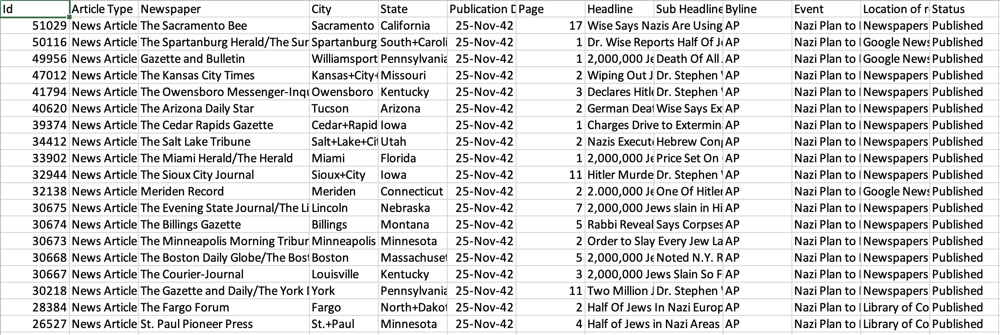
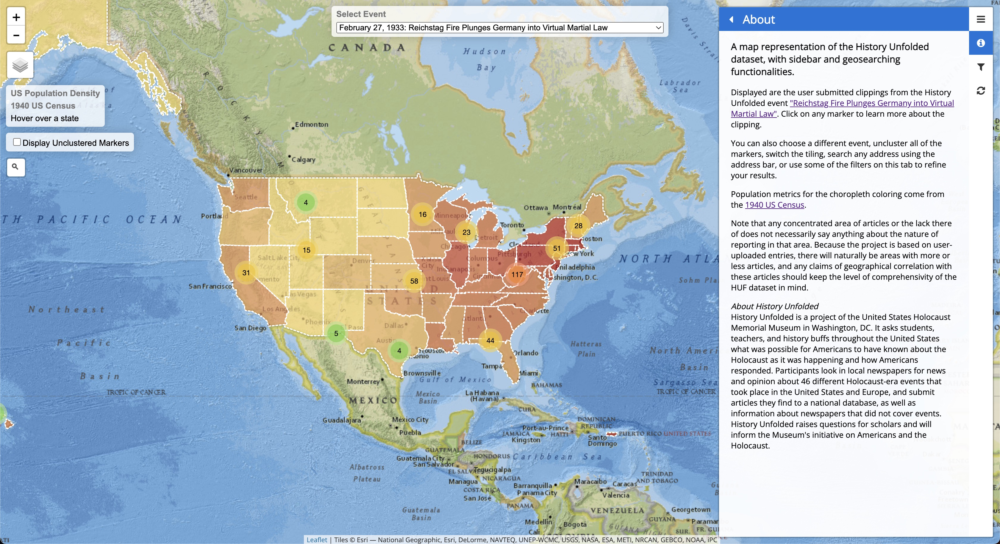
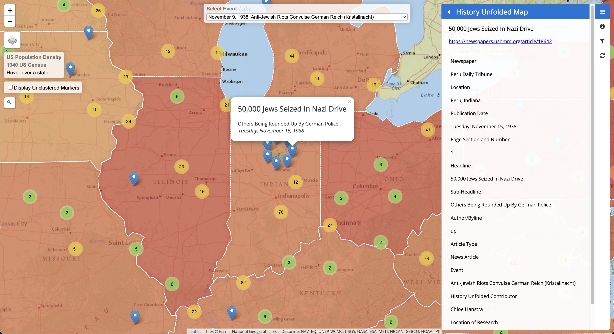

Mapping Citizen History Metadata
History Unfolded is a citizen history project of the United States Holocaust Memorial Museum in Washington, DC. It relies on the power of crowdsourcing to create a unique dataset of newspaper articles so that we can better understand what news Americans had access to throughout the Holocaust.
While the project currently allows for users to look through events and their articles in list form, the metadata that users input when uploading an article can be transformed into geographic data. This blog post aims to show the process of taking citizen history metadata and turning it into a useful interactive map, but also serves as an example of how metadata in collections broadly can be used in unique ways to create new visualizations.
This is a series that is based on my work throughout 2022-2023 in working with exploratory methods and tools on citizen history data. In this article we will be using Python, Jupyter Notebooks, Javascript, CSS, HTML, and the mapping library Leaflet.
The Data
The general structure of the data in History Unfolded is first filtered through events. These are specific important historical events chosen so that users can read about or find and upload articles relevant to those events. In any particular event, we can look through the articles and sort them by a variety of different metadata fields.
 Users need to input metadata when making an article submission to History Unfolded, such as the headline, the newspaper name, the page number it was found on, and so on. However, the relevant data for us to use for plotting the articles is the ‘City’ and ‘State’ in which the newspaper is located. From there, we can use that metadata to convert the city and state name into something a mapping library can understand and plot, namely latitude and longitude coordinates.
Geocoding
Geocoding is the process by which we go from any particular textual address to geographical coordinates. Rather than looking up each city and state name on a web search to find their coordinates, we can programmatically call upon existing geocoding services: we give the service the city and state values and receive the coordinates. Google Maps API is one service that we can use to retrieve these coordinates. There are other services such as the ESRI/ArcGIS geocoding service, or even the US Census has a geocoding service, however for this project we use the Google Maps API.
Because the backend data is given to us as a csv, we can use Python and Jupyter Notebooks to easily wrangle with the data. Below is an example of how one could make a request to the Google Maps API with the city and state name Groton, CT:
import urllib.request, json
with urllib.request.urlopen(
"https://maps.googleapis.com/maps/api//geocode/json?address={groton},{ct}&key=INSERT_API_KEY") as url:
geodata = json.loads(url.read().decode())
print(geo_data['results'][0]['geometry']['location'])
{'lat':41.3497456, 'lng': -72.0790717}
As you can see, we input the city “Groton” and the state “CT” into the url of the request and we receive the latitude and longitude of the result. Doing this process for all of the entries in a particular event of article submissions gives us two additional columns of metadata to go along with every entry: the latitude and the longitude of the location that it was published in.
Mapping Libraries
Now that we have the geographic coordinates of each of the entries, we can get started on mapping the articles. There exists many different mapping softwares of varying levels of user friendliness, technical capacity/complexity, and flexibility, but the library we will use in this project is Leaflet. While not trying to get too bogged down into the comparisons, Leaflet seems to balance not being too complex for a beginner programmer (as it does not fully delve into the world of GIS) while still being flexible and robust in its technical capacity as a Javascript library.
(If you are looking for something much less complex and more user friendly, I would recommend Felt. If you are looking for something more technically capable, I would recommend ArcGIS.)
Leaflet is a mapping library built in Javascript that allows for the light and easy interactive mapping of data. While there are many other libraries that are wrappers of Leaflet that provide more structure (React Leaflet) and the use of Leaflet in other languages (Folium), in this project we will use vanilla Leaflet and JS, HTML, CSS for our interactive map, as it allows us to easily use certain native Leaflet widgets with ease. This blog post isn’t meant to delve into all the technical details of setting up and implementing a Leaflet map, rather it will give broad strokes of how different features were implemented in the map.
Application
  The working version for the interactive map can be found here. The map’s data points are categorized, like the website, by events that you can switch from by the top dropdown bar. All points for each event are displayed and you can click on any numbered cluster to reveal their points, and then any marker point to open the sidebar and get all the relevant metadata for a particular point. There are a couple widgets that were added to the map to make it more interactive.
- Sidebar (from sidebar-v2)
- Adding a sidebar allows for users to view the metadata when clicking on different markers on the map.
- Choropleth layers (from Leaflet docs and U.S. Census Data)
- Adding interactive choropleth layers allows for both the implementation of population data, as well as the ability to click on any state and zoom into that particular state. The data used to map the choropleth coloring comes from the U.S. Census Data.
- Marker Clusters (from Leaflet.markercluster)
- One issue with mapping in general is what to do with markers of the same latitude and longitude. Because we have presses of the same cities and the location data cannot be more specific, we have to utilize a different tool to be able to display all the markers in a particular geographical coordinate. This Leaflet plugin allows for markers to be clustered and when click upon, it displays all the markers at that point to be clicked on.
- Filters
- There are a variety of filters on the sidebar that replicate the filters found on the HUF website. Here you can filter by type of article, or by type of press.
Observations and Purpose
By transforming the HUF data and making it usable for a mapping application, we can see a variety of different new ways that users can interact with the data.
Rural vs. Urban, Article Density
Displaying points in this web application allows for users to easily understand the rural and urban distribution of our dataset. In list form, this is hard to comprehend without specific population knowledge about particular geographic areas and even then requires scrolling through the articles in list form. When points are displayed on a map, users can easily see what kinds of or how many articles are being published in rural and urban areas. In a map form, it is also more immediately clear what areas have been sufficiently searched and uploaded for articles and which areas may need more research.
Personal User Interactivity and Educational Use
Having an interactive map as the way that users first explore these newspapers makes it easy for them to scroll and zoom to familiar, popular, or personal areas, without having to go through the events by list or by search on the normal HUF page. Users can move to these areas and also be able to see articles in areas nearby, a feature not immediately accessible with the data in its current format. Without having to search for the city that they are interested in, they can scroll to the area and even if there are no articles there, there may be articles around that particular area. In a classroom setting, this can be used to introduce students to articles in their area and around their state.
Future Work
More work can be done to improve the map, namely at this point adding more filters such as the newspapers.com embedded images, as well as more experimental filters that have to do with bylines. In addition, it would be interesting to have more set pages that one can view for specific presses or specific states when clicked on. There have also been ideas to be able to connect articles to one another, and find related articles, or to even have a search enabled onto the map that would display the markers that match the search query.
Conclusion
In this post, I described how one can use textual metadata inputted from citizen historians to display visually on a map the articles that they had found. I started from the History Unfolded dataset, to geocoding the text strings, to displaying the coordinates on a Javascript application using the Leaflet mapping library. From there, I discussed the positive effects that mapping can have on learning about our dataset and presenting it to users in new, engaging ways.